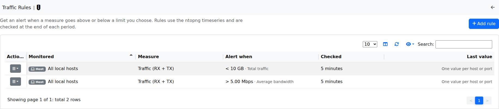
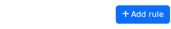
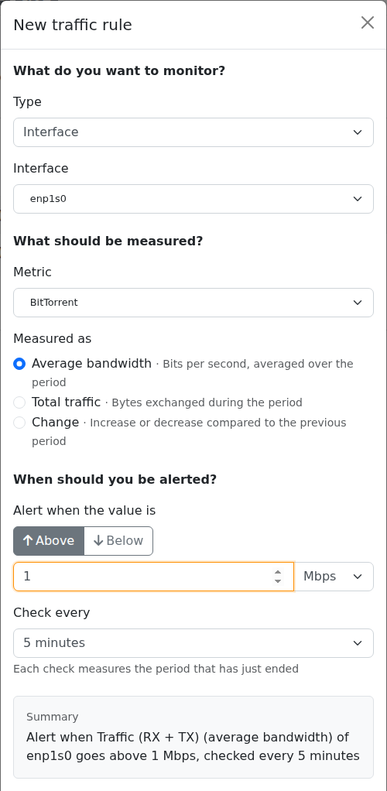
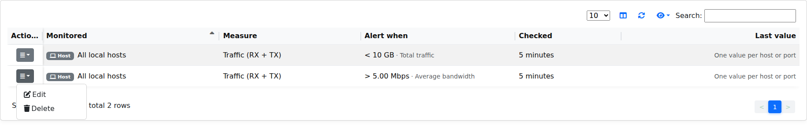

Правила дорожного движения
ntopng может вызывать настраиваемые оповещения на основе временных рядов. Это полезно для выявления неправильного поведения устройств, интерфейсов…
Примечание
Эта функция доступна только при наличии лицензии Enterprise M или выше.

Настроенные правила трафика
- Вот пример правил:
Общий ежедневный трафик сетевого интерфейса ens160 не должен превышать 15 GB;
Суммарный ежедневный трафик 192.168.2.28 не должен быть меньше 2 GB;
Ежедневный трафик NTP 192.168.1.1 не должен в целом превышать 2 GB;
Трафик 1kxun каждые 5 минут 1.1.1.1 не должен превышать 15% от общего трафика за предыдущие 5 минут;
Трафик каждые 5 минут 1.1.1.1 не должен превышать 1 Mbps;
Всякий раз, когда условие выполняется, ntopng вызывает оповещение.
Примечание
Страница доступна из Настройки -> Правила дорожного движения.

Доступ к правилам трафика
Доступные правила
Правила могут быть установлены для каждой таймсерии, доступной в данный момент в ntopng. Правила можно настроить для:
Экспортеры потоков;
Хост-пулы;
Интерфейсы;
Локальные хосты;
Сети;
Профили трафика;
сеть VLAN;
Настроить правила
Чтобы добавить новое правило, нажмите кнопку «Добавить правило» в правом верхнем углу страницы.

Добавить правило трафика
- На этом этапе заполните поля правильной информацией:
Тип: выберите тип объекта для анализа (Интерфейс, Хост, Пул хостов, Сеть, VLAN, Профиль трафика, Автономная система или Экспортер потока);
Интерфейс/Хост/Сеть/…: выберите объект для анализа (например, интерфейс enp1s0 или IP-адрес хоста);
Все локальные хосты: доступно для типа Хост. Установите этот флажок, чтобы проанализировать каждый активный локальный хост одновременно (например, Все локальные хосты). Это заменяет предыдущую цель * с подстановочным знаком, которая больше не используется;
Метрика: выберите метрику для анализа (например, Трафик (RX + TX), Оценка или приложение, например DNS -> трафик DNS);
Измеряется как: выберите, как измеряется метрика: Средняя пропускная способность (бит в секунду, усредненная за период), Общий трафик (байты, которыми обменялись за период) или Изменение (увеличение или уменьшение по сравнению с предыдущим периодом);
Оповещение, когда значение равно: выберите «Выше» или «Ниже», затем введите пороговое значение и выберите его единицу измерения (например, Кбит/с, Mbps или Gbps), при превышении которой будет вызвано оповещение;
Проверять каждые: выберите периодичность анализа: 5 минут, час, день или месяц.
Поле «Сводка» внизу формы описывает правило простыми словами перед его добавлением.
Примечание
Доступные показатели для анализа зависят от доступных временных рядов; это означает, что если временные серии приложений не включены в настройках, невозможно настроить/запустить правило на основе приложений.

Пример правила трафика на интерфейсе, вызывающего оповещение, когда трафик превышает 1 Mbps
Мониторинг всех локальных хостов
Чтобы применить правило к каждому локальному хосту, выберите Тип хоста и установите флажок «Все локальные хосты»: правило будет проверено на каждом активном локальном хосте, а поле Хост станет неактивным.

Выбор «Все локальные хосты» для мониторинга каждого локального хоста.
Примечание
Подстановочный знак *, использовавшийся в предыдущих версиях в поле «Цель», больше недоступен: вместо него используйте флажок «Все локальные хосты».
С этого момента в таблицу будет добавляться новая запись с настроенными полями, и при превышении порогового значения будет активироваться новое оповещение.
Редактировать/удалять правила
Более того, можно редактировать или удалять уже созданное правило.
Для этого используйте кнопку того правила, которое необходимо изменить: сама кнопка открывает Редактировать, стрелка рядом с ней открывает меню с Удалить:
Edit: Есть возможность изменить правило уже существующего; модальное окно такое же, как и для добавления нового правила, поэтому обратитесь к разделу выше;
Delete: Правило можно удалить; после удаления оповещение больше не будет срабатывать;

Удаление правила трафика
Примечание
Правила дорожного движения оцениваются в соответствии с указанной частотой правил. Например, ежедневные правила оцениваются каждую полночь с учетом трафика предыдущего дня.